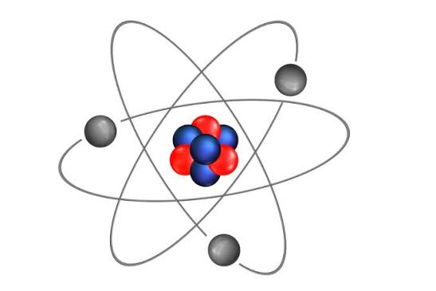

Hyrje në programimin në web
Kategoria: Teknologji
Orari: 09:00–10:00
Shiko detajetProgramimi në WWW

Kategoria: Teknologji
Orari: 09:00–10:00
Shiko detajetKategoria: Fizikë
Orari: 10:00–11:00
Shiko detajetKategoria: Robotikë
Orari: 11:00–12:00
Shiko detajetKategoria: Astronomi
Orari: 12:00–13:00
Shiko detajetKategoria: Matematikë
Orari: 13:00–14:00
Shiko detajetKategoria: Inteligjencë artificiale
Orari: 14:00–15:00
Shiko detajetNdërto një faqe të thjeshtë me HTML dhe CSS.
Mëso si shndërrohet energjia përmes eksperimenteve.
Njihu me pjesët e robotit dhe programimin e tij.
Eksploro planetët e sistemit diellor.
Zgjidh lojëra logjike dhe probleme matematikore.
Shiko eksperimente dhe projekte të thjeshta me AI.
Aktivitetet zhvillohen nga ora 09:00 deri në 15:00.